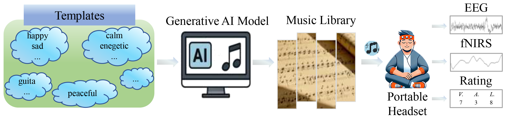

ZJU Brain Dataset (ZBra) is a collection of multimodal brain signal datasets (e.g., EEG, fNIRS) provided by the State Key Laboratory of Brain-machine Intelligence, Zhejiang University. We will provide a series of brain datasets for the academic community to explore. The datasets are managed by Dr. Sha Zhao and Prof. Gang Pan.
The first dataset we provide is ZBra-music Dataset, which can be used for emotion analysis. It consists of EEG and fNIRS signals recorded when subjetcts are listening to emotion relatd music clips that are AI-generated.
ZBra-music Dataset
The dataset comprises physiological recordings (EEG and fNIRS) collected from 44 participants via a wireless headband as they listened to music generated by AI, with a total duration of ~1,720 minutes. Each music clip is associated with one of four emotional states representing the valence-arousal quadrants: high arousal-high valence (HAHV), high arousal-low valence (HALV), low arousal-high valence (LAHV), and low arousal-low valence (LALV). EEG data is recorded from two prefrontal channels (Fp1, Fp2) using a portable wireless headset. fNIRS data is collected from eight optodes to measure prefrontal hemodynamic activity.
 Click here to know more details about the dataset.Paper
[1] Sha Zhao, Song Yi, Yangxuan Zhou, Jiadong Pan, Jiquan Wang, Jie Xia, Shijian Li, Shurong Dong, and Gang Pan. 2025. Wearable Music2Emotion : Assessing Emotions Induced by AI-Generated Music through Portable EEG-fNIRS Fusion. In Proceedings of the 33rd ACM International Conference on Multimedia (MM '25), October 27-31, 2025, Dublin, Ireland. https://doi.org/10.1145/3746027.3755270